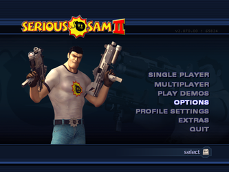
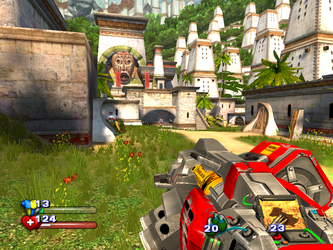

Serious Sam 2
Dieser Artikel wurde für die folgenden Ubuntu-Versionen getestet:
Dieser Artikel ist mit keiner aktuell unterstützten Ubuntu-Version getestet! Bitte diesen Artikel testen und das getestet-Tag entsprechend anpassen.
Zum Verständnis dieses Artikels sind folgende Seiten hilfreich:
Serious Sam II  ist der dritte Teil der Serie, welche von dem Protagonisten Sam "Serious" Stone handelt. Im Gegensatz zu den ersten beiden Teilen, Serious Sam: The First Encounter und Serious Sam: The Second Encounter, wird die Serious Engine 2 verwendet. Diese kann deutliche Verbesserungen im Hinblick auf Details, Umwelt und Physik vorweisen.
ist der dritte Teil der Serie, welche von dem Protagonisten Sam "Serious" Stone handelt. Im Gegensatz zu den ersten beiden Teilen, Serious Sam: The First Encounter und Serious Sam: The Second Encounter, wird die Serious Engine 2 verwendet. Diese kann deutliche Verbesserungen im Hinblick auf Details, Umwelt und Physik vorweisen.
Sam „Serious“ Stone muss fünf Teile eines Medaillons, welche sein Erzfeind Mental auf fünf verschiedenen Planeten deponiert hat, aufspüren. Nachdem alle Teile zusammengesetzt wurden kann man, dem nun verwundbaren, Mental auf dem Planeten Sirius gegenübertreten...
|  |  |
| Hauptmenü | Spielszene |
Installation¶
Zuerst ein geeignetes Verzeichnis zur Installation anlegen z.B. ~/Spiele/SeriousSam2/.
Steam¶
Nachdem das Spiel über die Vertriebsplattform über den Client erworben und installiert wurde in das Installationsverzeichnis ~/.wine/drive_c/Program Files (x86)/Steam/SteamApps/common/Serious Sam 2 wechseln und die benötigten .gro-Dateien in das Spieleverzeichnis kopieren:
cp *.gro ~/Spiele/SeriousSam2/
Liflg¶
Im nächsten Schritt die benötigten Linuxdateien von liflg.org den Installer serious.sam2_2.070beta2.1-multilanguage.dvd.run herunterladen, mit Ausführrechten ausstatten [3] und ausführen [4]:
./serious.sam2_2.070beta2.1-multilanguage.dvd.run --noexec --target ss2
In den neuen Ordner ss2 wechseln und die Archive serious.sam.2_beta_rc2.1.tar.bz2 und sed2_help.tar.gz entpacken [5]. Anschließend die benötigten Spieledateien in das Installationsverzeichnis kopieren [4]:
cp serious.sam.2.xpm ~/Spiele/SeriousSam2/ cp README.Croteam ~/Spiele/SeriousSam2/ cp bin/serioussam2 ~/Spiele/SeriousSam2/ cp bin/serioussam2-editor ~/Spiele/SeriousSam2/ cp Bin ~/Spiele/SeriousSam2/ cp Content ~/Spiele/SeriousSam2/ cp SeriousEngineTools_Help ~/Spiele/SeriousSam2/
Ausführrechte [3] bei serioussam2 vergeben und das Spiel anschließend starten [6]. Ein Menüeintrag [7] kann vorgenommen werden.
Konfigurationsdatei¶
Die Konfigurationsdatei Sam2.ini ist unter ~/Spiele/SeriousSam2/Content/SeriousSam2 zu finden und kann mit einem Editor [8] bearbeitet werden:
Erweiterungen¶
Erweiterungen können von seriouszone.com 
 heruntergeladen werden. Je nach gewählter Erweiterung wird diese im folgenden Verzeichnis gespeichert:
heruntergeladen werden. Je nach gewählter Erweiterung wird diese im folgenden Verzeichnis gespeichert:
| Erweiterungen | ||
| Erweiterung | Beschreibung | Ort |
| Maps | Karte | .gro-Datei in das Installationsverzeichnis kopieren. |
| Models | Alernative Spielecharaktere. | .gro-Datei in das Installationsverzeichnis kopieren. |
| Mods | Modifikationen | Nach dem entpacken in den Ordner Mods des Spiels kopieren. |
Probleme & Lösungen¶
libopenal¶
Erhält man die Fehlermeldung error while loading shared libraries: libopenal.so.0: cannot open shared object file: No such file or directory benötigt man die Pakete
libxxf86misc1:i386
libopenal1:i386
 mit apturl
mit apturl
Paketliste zum Kopieren:
sudo apt-get install libxxf86misc1:i386 libopenal1:i386
sudo aptitude install libxxf86misc1:i386 libopenal1:i386
Diese sind auf aktuellen Distributionen nicht mehr in den Paketquellen enthalten. Abhilfe schaffen hier die Bibliotheken, welche man in diesem Archiv vorfindet. Das .zip-Archiv entpacken [5] und die benötigten Bibliotheken libXxf86misc.so.1.1.0, libXxf86misc.so.1, libopenal.so.0.0.0 und libopenal.so.0 in das Installationsverzeichnis unter ~/Spiele/Spiele/SeriousSam2/Bin/Linux-Dynamic-Release kopieren.
Cheatmenü¶
Während des Spiels
Ö bzw.
drücken und sam_iEnableCheats = 1 eingeben. Alternativ kann das Cheatmenü in der Vollversion im Hauptmenü geöffnet werden. Hier die Linke
⇧ gedrückt haltet und die Tastenkombination
F3 +
F4 +
F3 +
F3 +
F4 eingeben. Über
F1 kann man nun das Cheatmenü öffnen.
| Cheatmenü | |
| Taste(n) | Beschreibung |
| G | Unverwundbarkeit |
| J | Schnelles Laufen |
| I | Unsichtbarkeit |
| L | Fliegen |
| K | Alle sichtbaren Feinde eliminieren. |
| U | Aimbot aktivieren |
| Einfg | Zusatzleben |
| Bild ↑ / Bild ↓ | Kapitel vor- / zurückspringen |
| + / - | Spielgeschwindigkeit ändern |

- Erstellt mit Inyoka
-
 2004 – 2017 ubuntuusers.de • Einige Rechte vorbehalten
2004 – 2017 ubuntuusers.de • Einige Rechte vorbehalten
Lizenz • Kontakt • Datenschutz • Impressum • Serverstatus -
Serverhousing gespendet von